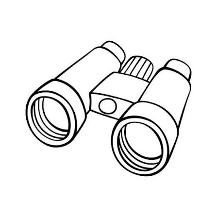
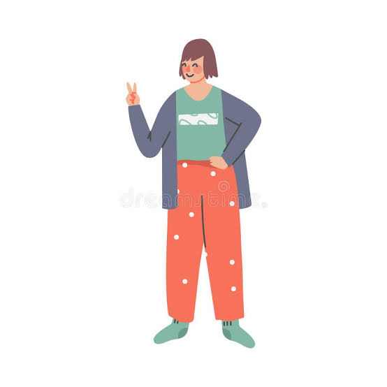
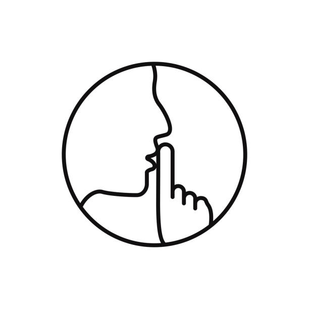
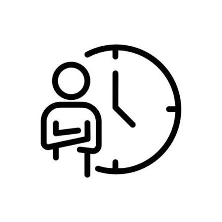
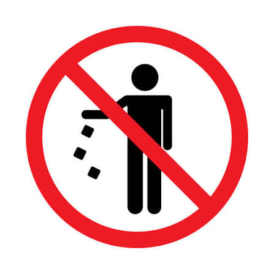
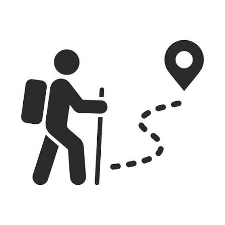
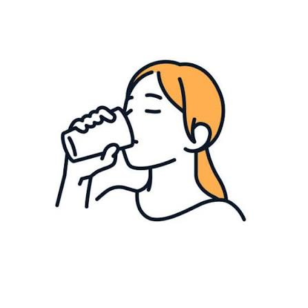

01
Lleva binoculares
Los binoculares permiten observar las aves desde una distancia adecuada sin acercarse demasiado a ellas.
Observar aves es una actividad que permite disfrutar de la naturaleza mientras conocemos y protegemos la biodiversidad. Sigue estas recomendaciones para tener una mejor experiencia durante tus recorridos.

Los binoculares permiten observar las aves desde una distancia adecuada sin acercarse demasiado a ellas.

Utiliza ropa cómoda y adecuada para caminar por senderos y diferentes ambientes naturales.

Evita los ruidos fuertes. El silencio facilita encontrar y observar aves que pueden ser sensibles a la presencia de las personas.

No persigas, captures ni intentes tocar a las aves. Obsérvalas respetando siempre su espacio.

No arrojes basura, evita dañar las plantas y deja los espacios naturales tal como los encontraste.

Permanece en los caminos establecidos para reducir el impacto sobre la vegetación y los animales.

Mantente hidratado durante el recorrido, especialmente cuando la ruta sea larga o tenga bastante caminata.
Las aves pueden tardar en aparecer. Espera con calma, observa tu entorno y disfruta de la naturaleza.
La paciencia es una de las mejores herramientas para observar aves. Detente, escucha los sonidos de la naturaleza y presta atención a los árboles y alrededores.
Cada recorrido es una oportunidad para conocer la biodiversidad de Popayán y contribuir a su conservación.
🌿 Explorar rutas